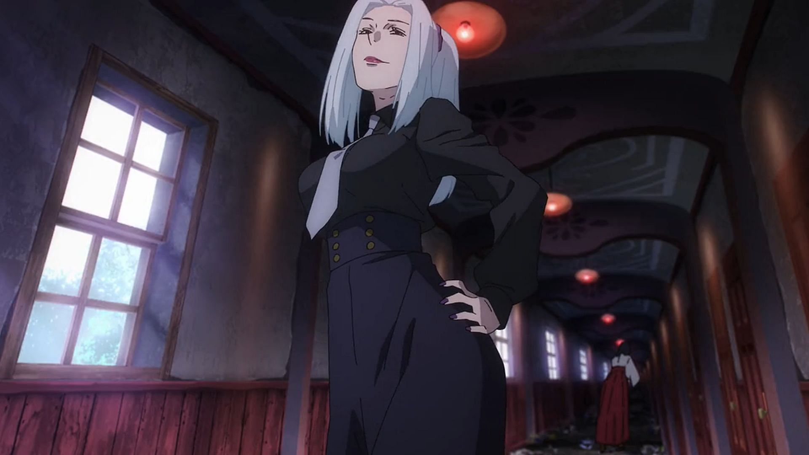
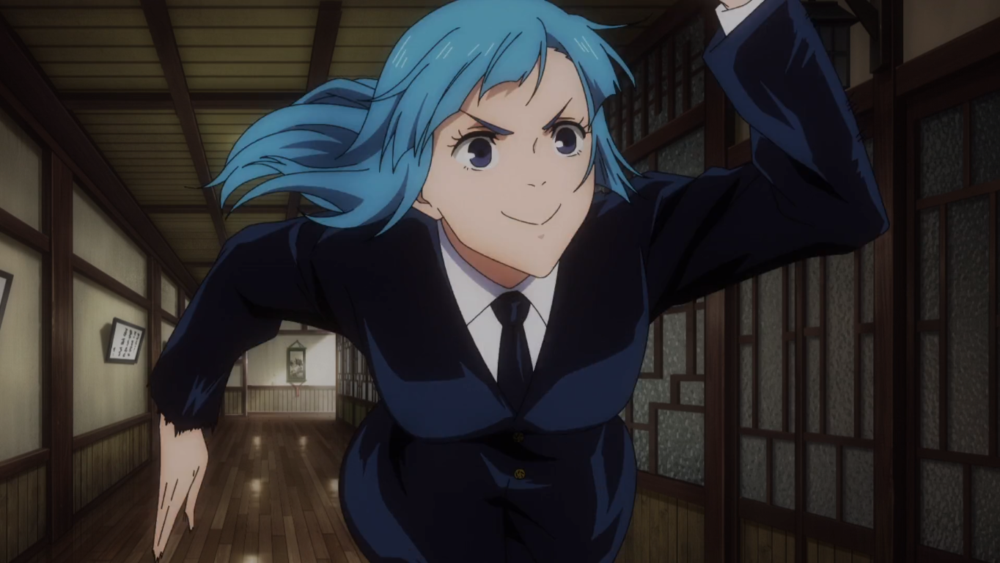
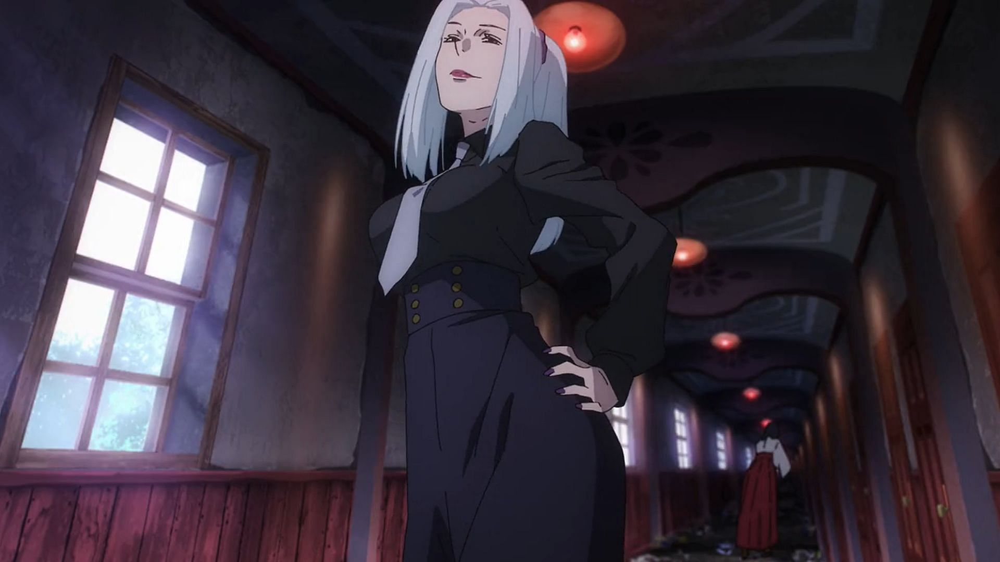
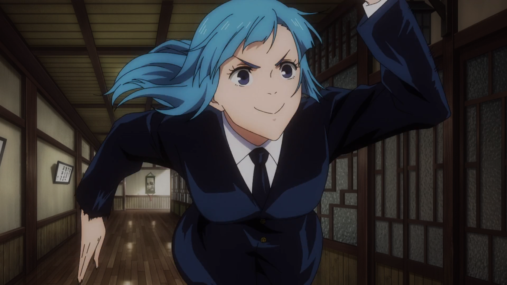

¿Quién es? Una de las protagonistas principales y estudiante de primer año en la Escuela de Hechicería de Tokio. Es segura de sí misma, audaz y con un fuerte carácter.
Poderes: Utiliza la Técnica de la Muñeca de Paja. Usando un martillo y clavos, puede atacar a las maldiciones a distancia y dañar el alma de su oponente con "Resonancia".
Papel en el anime: Es la tritagonista de la serie y aporta una dinámica enérgica al grupo principal. Sus habilidades son cruciales en varias batallas.
Creación y Canon: Nobara es un personaje canon y fundamental del trío protagonista. El autor, Gege Akutami, la creó para ser "fiel a sí misma" por encima de todo.
Curiosidades: Su técnica de "Resonancia" es especialmente peligrosa, ya que ataca el alma del oponente, ignorando la defensa física. Su confianza y descaro la convierten en una de las favoritas de los fans por romper los estereotipos de la heroína de shonen.

 


